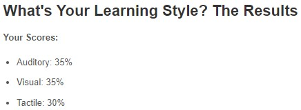
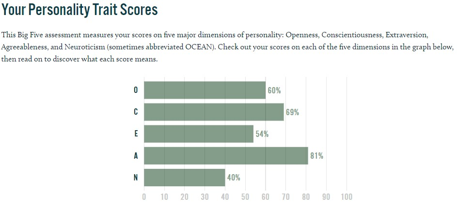
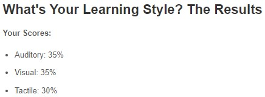
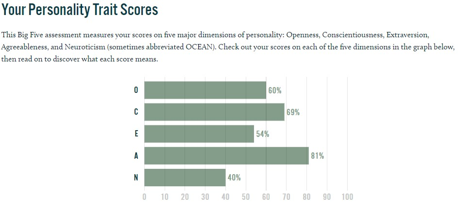

Hello, my name is Matthew Manriquez, and I'm 27 years old. I graduated from high school in the 12th grade. My student number and email address are S3934011, S3934011@student.rmit.edu.au, and I'm now studying introduction to information technology and programming at RMIT.
Some of my favourite pastimes are taking my pet dog Lola for a walk, watching sports, gaming, reading, and spending time with loved ones. I come from a Spanish family and can communicate in the language.
My interest in IT began in year 10, and I continued to take IT classes until my senior year of high school, then I began doing tech graphic classes. I loved most of my tech topics in school, and they were always a source of delight for me. My objective after graduating from high school was to work in the IT field, but life had other ideas. I had been working in a couple dead end jobs for years until I met a friend who had completed his Batchelor of IT at RMIT, and he inspired me to finish pursuing my ambition, so here I am.
I believe that an IT support engineer position would be my ideal job because whenever a family member or friend has had a tech issue, I've always been the one to help because I like to consider myself to be somewhat tech savvy. I enjoy helping others with their tech issues because it makes me feel accomplished that I've helped someone with only a high school diploma. To be considered for the job listed above, I must have at least 2 years of expertise with computer networking and systems engineering, as well as knowledge of Windows desktops in AD environments, Windows server, Office 365, Active directory, switches, firewalls, VMware, and Hyper V environments. Because I'm still a student at RMIT, I don't have any current qualifications. My skills are limited because I've only done IT-related things in grades 10 to 12 and self-taught via YouTube, but I believe myself to be quite computer aware when it comes to Windows and OS. I intend to complete my Batchelor of Information Technology at RMIT University so that I can begin my career as an IT support engineer.
This is a link to my ideal jobMy 16-personality test revealed that I have an advocate personality, which is the rarest of all personality types. Advocates, on the other hand, leave their imprint on the world. They have a strong sense of idealism and ethics, but they aren't idle dreamers; they work hard to achieve their objectives and leave a lasting impression. My learning style is very balanced between auditory, visual, and tactile learning, according to my education planner test, and my big five test shows that I stand out with agreeableness, which means I tend to put others needs ahead of my own, and to cooperate rather than compete with others. People with a high Agreeableness score have a lot of empathy and like helping and caring for others. This is a paragraph.
  
 
My project idea is a news app that’s tailored for you. It will gather all the relevant news articles from your chosen topics using all available avenues while filtering out all the unnecessary articles and adverts we are subjected to using mainstream news sites and apps. The way it would differ from other news apps would be its exclusive searching capabilities and lack of advertising.
If you calculated the amount of time spent scrolling through news sites looking for the topics we are interested in, you would find out that this app would be a massive time saver.
The motivation behind this idea is based on my belief that time saving apps are lifesaving apps. Some people don’t want to know what the A lister celebrities are currently doing, we want the latest news on the topics that intrigue and motivate us.
The majority of news sites and apps are also riddled with advertisements and I for one don’t want to sit through watching 3 ads about the latest clothes and sales. I firmly believe that quick and relevant access to the information you need is almost a right rather than a privilege.
I’ve decided on the following features for my news app:
• Social integration for sharing news
• Search and Filter news topics based on topic, date, region and category
• User registration via email or socials
• Participate in polls
• Save quotes and news for later reading
• Machine learning based news on user’s preferences
• Push notifications and news alerts via email and SMS
• Underline and save texts
• Offline access for news
• Browse not just categories but specific quotes and articles
• Comment and like on articles
• View live broadcasts of news and radio channels
• Listen to news in audio format
• Smart watch integration
• Absolutely no advertising
• One of the broadest news sources both mainstream and underground, allowing users to determine the reliability of their chosen articles
The bottom two features will be the pillars of my business model and the features that set mine apart from the rest.
The app will have the functionality to constantly update the news every few minutes or every hour. The admin must keep updating to keep the users aware of latest happenings around the world.
Now people can also read latest news on their smartwatches as well. It could be integrated and could prove to be an excellent advanced feature for techno savvy news app users.
Using this feature, the users would be able to find exact news/information they are searching by simply typing few useful keywords.
A strong and robust Content Management System can also be offered for the backend development. It is Pivotal that the content is managed systematically and often opinion polls can even be conducted for times when an important issue is for a survey.
During the times of no internet connection, the users should still be able to use the app. For this, the app can allow its users to save articles to their smartphones or tablets and read even when there is no internet connectivity
Often users are short of time to read the news, and here audio format can come useful, where the users can convert the news into the audio format and listen to it. Video Integration can also be introduced as often users prefer to watch news in video format.
his functionality will allow this app users to share news articles with a single tap on their devices.
It is integral for any app to be integrated with the basic functionalities, however this app will also be integrated with advanced functionalities so that it better serves the app users.
This is a vital feature for all news apps as it helps to increase the user retention and also allows to send crucial updates related to news or other exciting offers.
In order to stimulate growth a loyalty program will offer our customers multiple deals in various news categories which lets them earn rewards and benefits.
The first step in tools and technologies would be picking a programming language. I believe the best choice for my app will be PHP. Not only is it easy to learn but it’s applications towards larger scale caching, authentications and even routing will be exactly what's needed. PHP is compatible with a large majority of operating systems. It can easily run-on different platforms, including UNIX, Solaris, and Linux. As it can be integrated without effort with other technologies, such as Java, existing software does not require re-development. This saves time and money.
Product Management Skills
The product manager for a mobile app creator is the vital link between the design team and the client. They delve into the business requirements of the app and uncover the customer's vision. They make sure the team of developers shares that vision.
Design Skills
You don’t want unattractive apps and icons on your high-tech smartphones. i need my app to be attractive as well as delivering a smooth experience and value.
a developer should possess design skills that interest and encourage people to use their apps.
Clean Coding
Given that mobile apps are the technology of the future, I'll need app development skills that will help select the suitable coding languages such as PHP, HTML5, Java, C++, Objective-C, Swift and C#, and produce clean code.
If my app was to be successful, I believe it will truly make a real-world difference. Having quick access to the relevant information can aid people on many fronts including cyclone/tornado awareness, disease hotspot information and impending political/civil unrest hotspots. the foremost value of news is as a utility to empower the informed and to be able to deliver that without mind numbing advertising and biased/slanted news articles is the best impact my app could hope for.